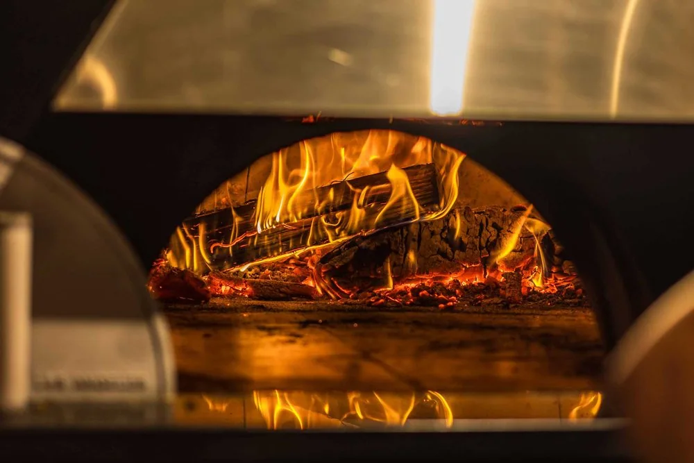

Close to home
Our local vendors
From the white oak that fuels our oven to the produce and meats on our pizzas, these are some of the businesses we work with.

Lohrberg Lumber
Lohrberg Lumber (firewood) -- firewood is the lifeblood of our wood-fired oven, so it's no surprise that we turn to high-quality white oak from our local mill. Harvested and milled right here in the county, the Lohrberg family have been with us since the very beginning. No matter how big or small your lumber needs, check them out and see what they have to offer!
BLESSED BEE HONEY COMPANY
Blessed Bee Honey Company ("Sweeter Than Hot" spicy honey) -- like the bees they keep, Curt and Allison are two of the hardest-working people we know, and it shows in their products. If you want great honey from even greater people, check out their page for more info on where you can find their products!
SCHUBERt’s SMOKEHOUSE
Schubert's Smokehouse (sausage, bacon, tenderloin tips, smokies) -- a local, award-winning, family-operated packing plant and smokehouse that sources their pigs and cattle from family farms in the nearby area. David and his family are community mainstays, and we're proud to source our meats from them. Check out their online store for their products and services!
SHORTY’s SMOKEHOUSE
Shorty's Smokehouse (chicken, brisket) -- a Waterloo gem that hardly needs an introduction, Shorty's is a small town BBQ restaurant in the heart of downtown, specializing in old style low-and-slow BBQ. Tony and Brandon, in addition to being awesome neighbors who have elevated our pizzas in some pretty fantastic ways, are also great friends of ours. Check them out for weekday lunches or on the weekends; they're not even a block from our brewery!
Lia! Microgreens
Lia! Microgreens (radish microgreens) -- grown here in Waterloo! Anthony and Amanda aren't just expert growers of some delicious produce; they're good friends of Hopskeller. They have mixes available, as well as single greens.
CHARC-BITES CHARCUTERIE
Charc-Bites Charcuterie (charcuterie boxes) -- Lauren's been a Hopskeller super-fan for quite a while, so it's only natural that we'd showcase her talent with charcuterie. Her custom charcuterie tables are works of art; if you're looking for a fun and creative way to cater your next event, reach out to Lauren and see what's available!
Feather’s Farm
Feather's Farm (greens, produce) -- a small market garden and family farm on the outskirts of Waterloo, Illinois, specializing in non-GMO greens, veggies, pasture-raised eggs, and decorative flowers. Check them out on their online store, or see them at the Monroe County Farmers Market every Saturday (when in season)!
BOXCAR GREENS
Boxcar Greens (basil) -- a small hydroponic farm just outside of town, focusing on specialty greens, herbs, and edible flowers. Maggie and Andy not only know their stuff; they're great people who have been incredibly helpful to us. Enjoy their basil in our pizza sauce and as a topping, or check them out at the Monroe County Farmers Market!
Monroe Mushroom Farms
Monroe Mushroom Farms (blue oyster mushrooms) -- a family-run, small-scale mushroom farm specializing in culinary and medicinal mushrooms. Available via their email or at the Monroe County Farmers Market. We can't speak highly enough about their blue oyster mushrooms!